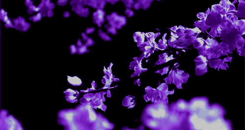

| Flowers are the reproductive structures of flowering
plants (angiosperms) and play a crucial role in
plant reproduction. They come in a variety of shapes, sizes, and colors, designed to attract
pollinators
like bees, butterflies, and birds. Flowers typically consist of four main parts: petals, sepals,
stamens
(male reproductive organs), and pistils (female reproductive organs). Some flowers are solitary,
while
others form clusters.
Flowers not only serve ecological functions but also hold cultural and symbolic significance, often associated with beauty, love, and emotions in human societies. Examples of popular flowers include roses, lilies, and sunflowers. |
|
Types Of Flower1. RosesLike the flower itself, the history of the rose is very colorful. Roses have been naturally growing for over 35 million years! However, they were not known to be cultivated until about 5,000 years ago. Their usage began not just as a decorative touch to one’s home, but they were also used for medicinal purposes and to make perfumes, and their petals were even used as confetti for festive occasions. Getting your roses into water quickly is the first step in caring for them. Fill a vase three-fourths full of fresh, cool tap water. The roses will absorb the water, soaking up the nutrients that will travel up to the bloom and create a lively flower. Check the water level in your rose’s vase every day and add more water as needed. Shop these classic flowers for Valentine's Day! |
|
2.SunflowerSunflowers are one of the most popular flower types and are best known for their dazzling yellow color and large size. They generally symbolize adoration, loyalty, and longevity in the language of flowers. Native Americans view sunflowers as a symbol of harvest and bounty since the flower provides seeds and pigments, in addition to being visually beautiful. Sunflowers need direct sunlight for six to eight hours per day and require hot conditions to flower well. Sunflowers also have long roots that require plenty of room to spread out, so soil should be well dug and not too dense for growth. Avoid over-fertilization or risk your stems breaking in the fall. In addition to being great in a garden, sunflowers make great gifts and look wonderful in bouquets |
|
3.HydrangeaYou know summer is here when big, showy hydrangea bushes begin gracing gardens across the country. This perennial, a native of East Asia and the Americas, comprises more than 75 species and 600 cultivated varieties, of which mophead, lacecap, oakleaf, and peegee are the most common. Some hydrangea flowers can turn a pretty pink or blue depending on the acidity or alkalinity of the soil, while others will remain white. Mopheads, lacecaps, and oakleafs bloom on the previous year's wood and can be pruned in the summer after flowering; peegees bloom on this year's wood and can be pruned in the late winter, before the new spring growth. |
|
4.LavenderSpanish, French, or English lavender are sweet herb garden favorites that provide soothing fragrances, flavorings, and beauty all together in little floral packages. More than 40 species are native to areas surrounding the Mediterranean and are semi-evergreen perennials or sub-shrubs with gray-green, hairy, linear leaves and purple, violet, lavender, or pinkish-white flowers. Tiny glands on the flowers, leaves, and stems of the plant produce the scented oil that is used in perfumes, bath preparations, lavender water, and in aromatherapy to relieve stress and anxiety and bring about sleep. Lavender is also prized as a flavoring in cooking, as an ingredient in teas, and for a monofloral honey. |
 |
5.PeonyPeonies, a beloved flower that blooms in late spring/early summer, come in a wide variety of colors. They range from white to red, coral, purple, pink, and yellow. These flowers make stunning centerpieces and work great in large bouquets. The key to growing a thriving peony is to make sure you plant it at the right time, plant correctly, and, of course, care for it all throughout the year, even when it isn’t necessarily in season. Since peonies can grow rather tall (sometimes as tall as 5 feet!), you’ll need to make sure that the spot you choose is spacious enough. And remember, peonies can come back year after year, so you’ll need to think long term. |
|
|